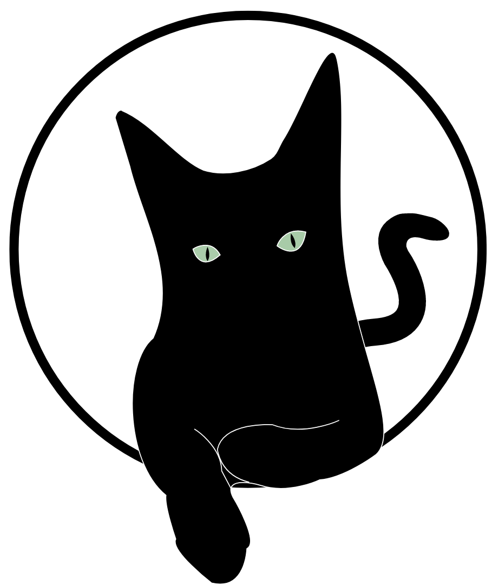

<div class="header" style="height: 11%;">
    <mat-toolbar style=" height: 55%; background-color: white;">
        <span class="spacer"></span>
        <div class="flex-container">
            <button *ngIf="usuarioLogado && isAdmin" (click)="clickMenu()" mat-icon-button class="example-icon"
                aria-label="Example icon-button with menu icon">
                <mat-icon>menu</mat-icon>
            </button>
            <div class="logo">
                <a (click)="navigateToHome  ()" class="unstyled-link">
                    
                </a>
            </div>
            <span class="example-spacer"></span>
            <span class="example-spacer"></span>
            <span *ngIf="isAdmin" class="toolbar-title">ADMINISTRADOR</span>
            <span  *ngIf="!isAdmin" class="example-spacer"></span>

          <span class="example-spacer"></span>
          <span  *ngIf="!isAdmin" class="example-spacer" style="width: 100%;"></span>
          <span  *ngIf="usuarioLogado && !isAdmin && !isAdminRoute" class="example-spacer" style="width: 100%;"></span>
            <button routerLink="/compras/carrinho" mat-icon-button class="demo-section example-icon favorite-icon"
                aria-label="Example icon-button with heart icon" style="margin-right: 10px;">
                <mat-icon [matBadge]="qtdItensCarrinho" matBadgeColor="warn" matBadgePosition="after"
                    matBadgeOverlap="false" aria-hidden="false">shopping_cart</mat-icon>
            </button>
            <button [matMenuTriggerFor]="menuPerfil" type="button" class="profile-button"  >
                
            </button>
          <mat-menu #menuPerfil="matMenu">
            <button routerLink="admin/perfil/view" mat-menu-item>
              <mat-icon>account_circle</mat-icon>
              <span>Conta</span>
            </button>
            <button mat-menu-item (click)="logout()">
              <mat-icon>logout</mat-icon>
              <span>Sair</span>
            </button>
          </mat-menu>

        </div>
    </mat-toolbar>
    <mat-toolbar style="background-color: var(--default-purple); height: 45%;">
        <span class="header-rote"></span>
    </mat-toolbar>
</div>
